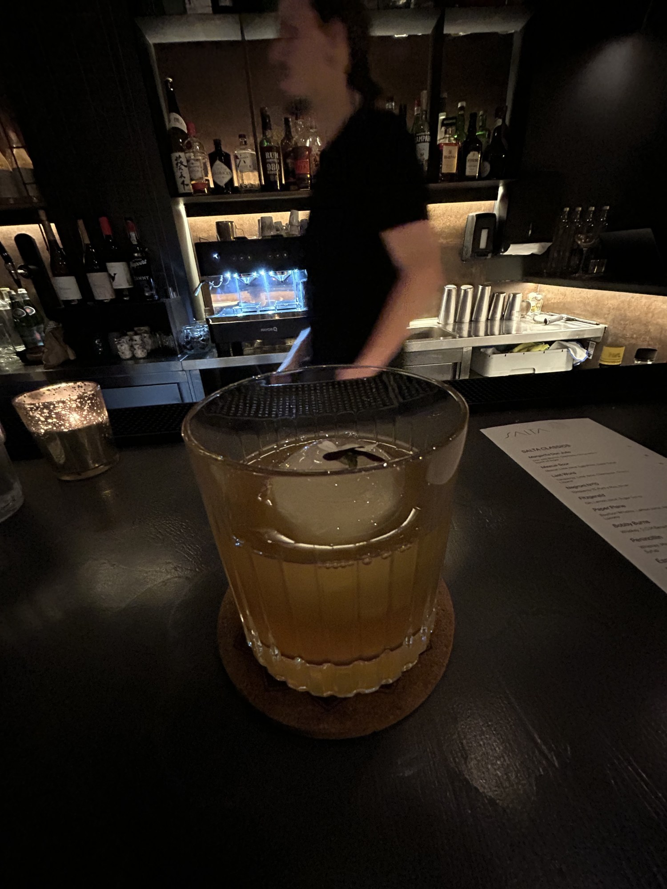
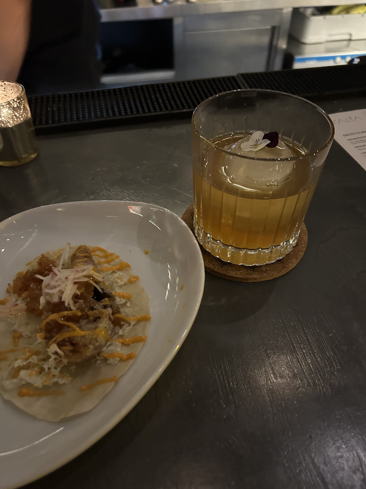
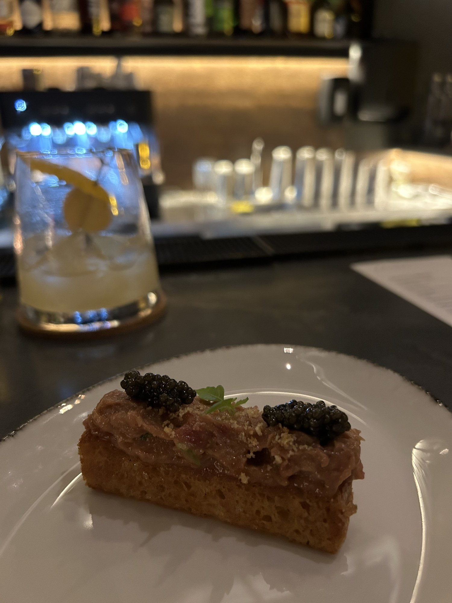

Super thick foam, lovely flower garnish and bitter drops.
My thoughts
One of my favorite classics with a subtle twist.
The rosemary syrup adds some herbaceousness to an otherwise one-dimensional drink. And it's not overpowering, just enough to get a hint on the back end.
I love the use of real egg whites, creating a very nice foam. Pleasant drink.

“I remember asking the bartender to make me something fun”
What I drank / 02
Bartenders Creation
Ingredients
Unfortunately I do not have this info
The profile
Rocks glass with a round cube.
My thoughts
Now, with this being 2 years ago and not officially being on the menu, unfortunately, I forgot exactly what it was.
But I remember asking the bartender to make me something fun. He told me he was workshopping this drink to go on a future menu. Hopefully it made the cut!
I want to say it was some peanut butter-washed whiskey drink. But I would not put any money on me being right.
I still wanted to include it on this list, however.
A really nice classic. I'm not sure what drew me into ordering this over some of their signature drinks, but I guess I was in the mood.
The fermentation of the honey balances the citrus. Although the ingredients list says lime, I'm fairly confident they used lemon, as in some countries they use the same name for both.
No complaints.
The Space
So technically, I would say Salta is a restaurant, not a bar. But their bar is super good!
When you go though, totally go for dinner and get some food because it was unreal.
Chic, modern interior with the bar right when you walk in. I got a seat at the bar and was able to talk with the friendly bartender.
The soundtrack was nice, and the overall vibe was very comfortable and hip.
Extras
Some of the best bits of food I've had. I went with a few nibbles. Soft shell crab taco and a surf and turf brioche.
The soft shell crab taco was fucking unreal. My picture doesn't do it justice. Amazingly crispy soft shell crab, chutney, gochujang mayo. Two come in an order, and once I scarfed them down, I ordered two more.
Then for the surf and turf brioche, it was this incredibly fatty and buttery wagyu and fatty tuna on top of a toasted brioche. Then two caviar dollops on top. Just decadent.
100% worth coming here for dinner and drinks.

Soft Shell Crab Taco

Surf and Turf Brioche
My Verdict
6.3 / 10Taste
6.7 / 10Atmosphere
Taste reflects what I drank. Atmosphere reflects the bar experience.